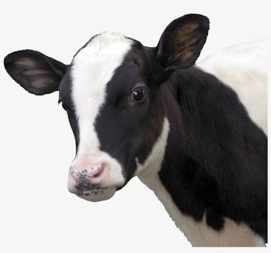

Como ela é
class="artigo-autor">Central de Notícias de Duskwood
A cidade de Duskwood enfrenta um clima de preocupação após o desaparecimento da jovem Hannah, ocorrido em circunstâncias ainda não esclarecidas. As investigações ganharam um novo rumo quando amigos da desaparecida receberam, do celular da própria vítima, uma mensagem contendo apenas um número desconhecido. O caso segue sob apuração, enquanto autoridades buscam esclarecer os fatos e identificar possíveis envolvidos. O episódio tem gerado grande repercussão entre os moradores e intensificado a atenção para o andamento das investigações.
Hannah Donfort é uma jovem de cabelos castanhos, olhos claros e estatura média. Seu desaparecimento em circunstâncias misteriosas mobilizou as autoridades e chamou a atenção de toda a cidade de Duskwood.